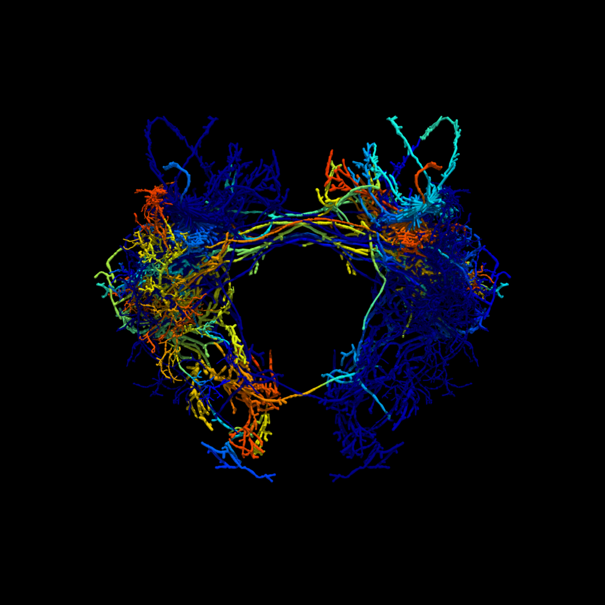

swc2vtk
1.0.2
README
Examples
Draw Mode
Gallery
swc2vtk
swc2vtk
Docs
»
Welcome to swc2vtk’s documentation!
View page source
Welcome to swc2vtk’s documentation!
¶
README
Introduction
Installation
Quick example
Citation
Examples
Generate a VTK file from multiple SWC files
Generate a VTK file from SWC file with simulation data
Generate VTK files from SWC file with sequential simulation data
Change SWC file position
Draw Mode
Sample Program
draw_mode
=
0
draw_mode
=
1
draw_mode
=
2
draw_mode
=
3
(default)
draw_mode
=
3
with Gourand Shading
Gallery
Single neuron morphology (antennal lobe neuron of silk worm moth)
Standard brain mapped neuron simulation (LAL-VPC region of silk worm moth)
swc2vtk
swc2vtk package
Indices and tables
¶
Index
Module Index
Search Page
Example image
¶
